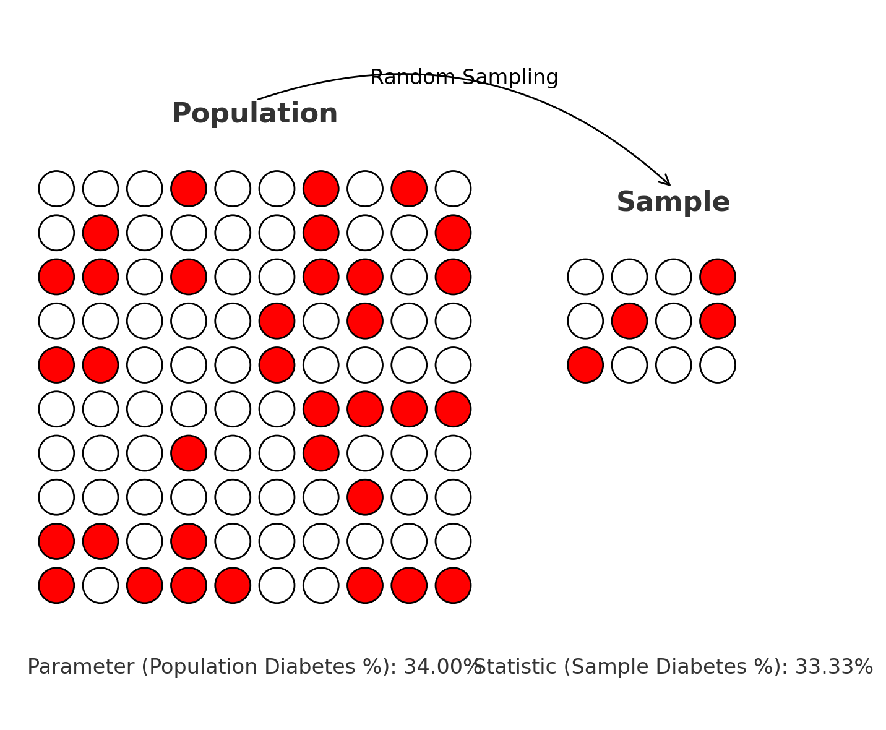
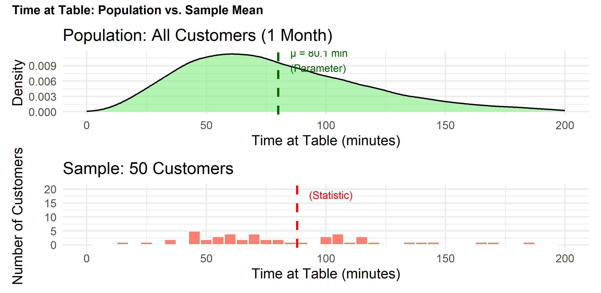
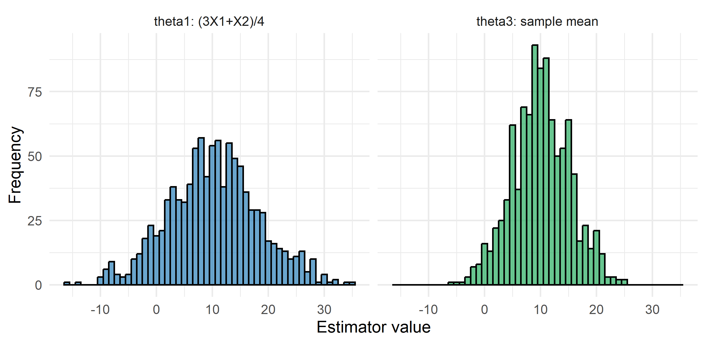
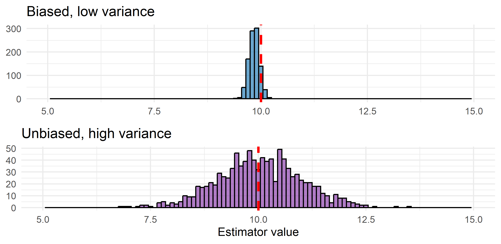
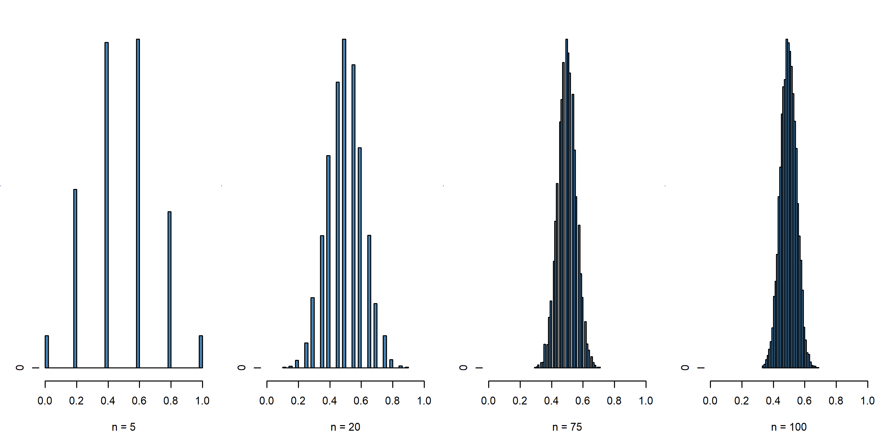
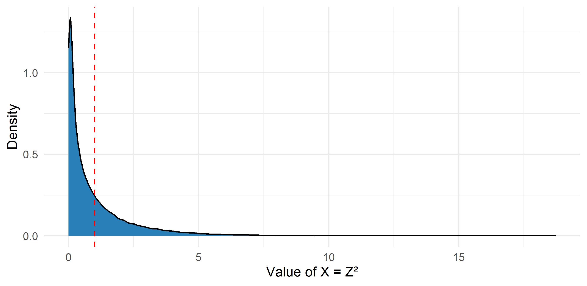
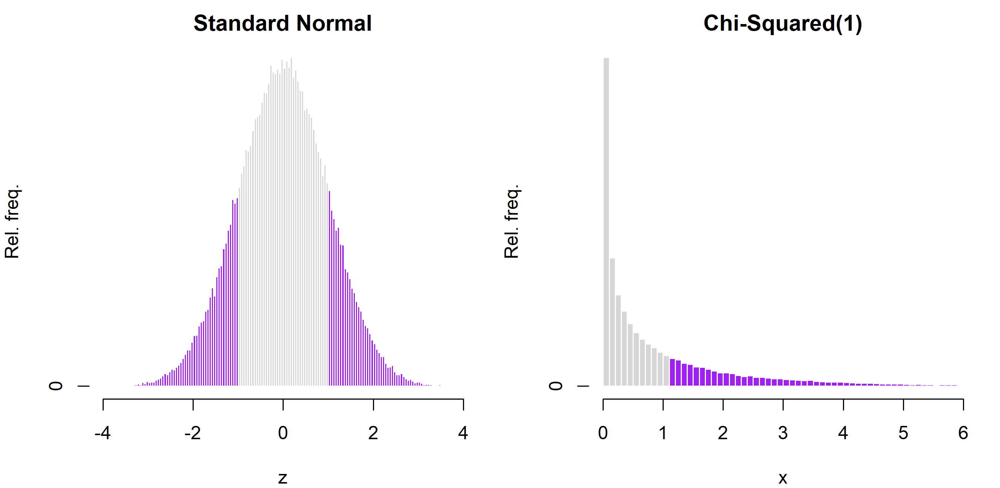
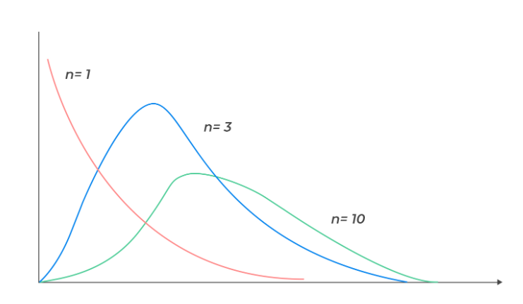
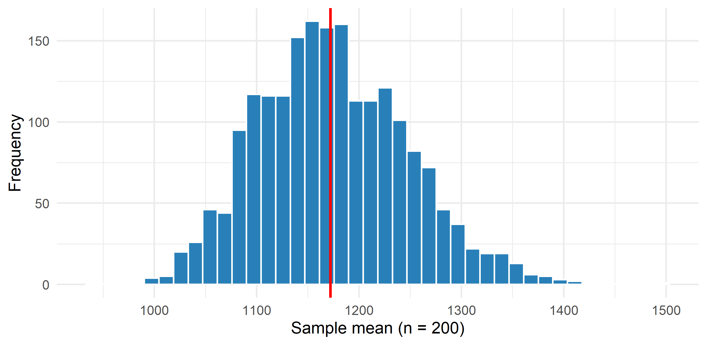
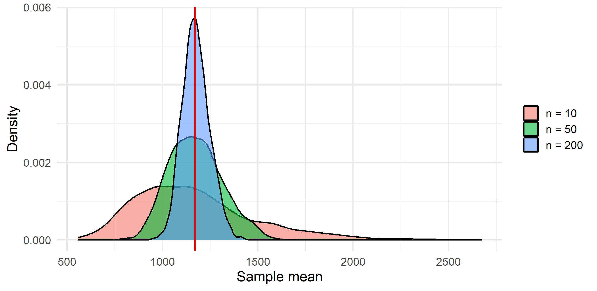

Business Forecasting
Describing data → Reasoning under uncertainty → Regression → Time series forecasting
First week of reasoning under uncertainty. Your data is only a sample, so every number you computed so far is a guess. This week: how much those guesses move, and why they end up bell-shaped.
You run a bunch of Airbnbs in Mexico City. Should you invest more in cleaning?
We have a sample of 200 listings (price, cleanliness clean):
| id | review_scores_cleanliness | price | clean |
|---|---|---|---|
| 40032982 | 3.00 | 1023 | Dirty |
| 21962322 | 4.50 | 4500 | Dirty |
| 41841538 | 4.50 | 380 | Dirty |
| 624813934659858771 | 3.40 | 1350 | Dirty |
| 47030021 | 4.29 | 684 | Dirty |
| 46736994 | 4.29 | 451 | Dirty |
| Group | Listings | Mean price |
|---|---|---|
| Clean (score > 4.5) | 100 | 1245 |
| Dirty (score ≤ 4.5) | 100 | 869 |
In these 200 listings, clean apartments charge 377 pesos more per night. Cleaning looks worth paying for.
But can you spend money on that number?
How much of that can we answer with these 200 alone?
The four words the rest of the course is written in.
Parameter belongs to the population, statistic belongs to the sample. Greek letters (\(\mu\), \(\sigma\), \(\pi\)) for parameters; Latin letters or hats (\(\bar{x}\), \(s\), \(\hat{\pi}\)) for statistics.
\[\cssId{mt-pidiab}{\pi} = \frac{\cssId{mt-ndiab}{D}}{\cssId{mt-npop}{N}}\]


Every one of these is a number about a group you cannot measure, decided from a group you can. The question is always the same: how far from the truth can that number be?
In real work the parameter is unknown, so you can never check your answer.
Here we can. Those 200 listings were drawn from every Airbnb listing in Mexico City — and for this deck we have all of them:
So the parameters are no mystery. Across the whole city:
\[\mu_c = 1{,}195 \qquad \mu_d = 1{,}024 \qquad \mu_c - \mu_d = \mathbf{171}\text{ pesos}\]
Your 200 listings said the gap was 377. The truth is 171 — you would have valued cleaning at more than twice what it is worth. Nothing went wrong; that is simply what a sample of 200 does.
mean(sample(population, 200)) is one estimate from a fresh scrape of 200 listings — we vary the sample size all week. Before you run anything: which of those two numbers changes if you repeat it?
n = 200, and print them side by side.sample(population, 200) draws 200 values; mean() collapses them to one number. Print a pair with c(parameter = ..., estimate = ...). replicate(5, expr) runs expr five times and returns the five results.
The parameter printed the same number every time; the five estimates did not. They scatter around 1,172 by something like a hundred pesos — from the same market, with nothing changed except which 200 listings were drawn.
mean(population) — the parameter — is a single fixed number. It never moves.mean(sample(population, 200)) — the estimate — is different on every draw.The next four weeks are about that second line: how far does the estimate wander, and what can we still say about the truth after seeing only one draw of it?
What has to be true of the draw for the guess to mean anything.
The \(P_i\) are still random — no values yet:
| Random Variables P_i | P_1 | P_2 | P_3 | P_4 | P_5 | P_6 |
| Selected Listing IDs | ||||||
| Realized Values p_i |
Drawing realizes each \(P_i\) into a concrete value \(p_i\):
| Random Variables P_i | P_1 | P_2 | P_3 | P_4 | P_5 | P_6 |
| Selected Listing IDs | 8451 | 9015 | 8161 | 9085 | 8268 | 1622 |
| Realized Values p_i | 120 | 150 | 800 | 200 | 1400 | 110 |
A different draw from the same population gives different realized values:
| Random Variables P_i | P_1 | P_2 | P_3 | P_4 | P_5 | P_6 |
| Selected Listing IDs | 1933 | 3947 | 3145 | 3773 | 6721 | 3373 |
| Realized Values p_i | 260 | 420 | 500 | 2120 | 800 | 1450 |
The point estimate changes every time we draw.
The rule that turns a sample into a guess — and why it is random.
You want the average nightly price in Mexico City. You will draw 8 listings at random and average them. Nothing has been drawn yet.
| Random variable | P1 | P2 | P3 | P4 | P5 | P6 | P7 | P8 |
| Listing ID drawn | ? | ? | ? | ? | ? | ? | ? | ? |
| Realized price p | ? | ? | ? | ? | ? | ? | ? | ? |
\[\hat\mu = \frac{P_1 + P_2 + \dots + P_8}{8}\]
| Random variable | P1 | P2 | P3 | P4 | P5 | P6 | P7 | P8 |
| Listing ID drawn | 4821 | 1330 | 7042 | 2914 | 6108 | 3567 | 9251 | 5480 |
| Realized price p | 120 | 150 | 800 | 200 | 1400 | 110 | 1900 | 800 |
\[\hat\mu = \frac{120 + 150 + 800 + 200 + 1400 + 110 + 1900 + 800}{8} = 685\]
One number, no longer random: the point estimate.
Same city, same rule, eight different listings.
| Random variable | P1 | P2 | P3 | P4 | P5 | P6 | P7 | P8 |
| Listing ID drawn | 3145 | 3773 | 6721 | 3373 | 2102 | 5365 | 4453 | 3621 |
| Realized price p | 260 | 420 | 500 | 2120 | 800 | 1450 | 120 | 809 |
\[\hat\mu = \frac{260 + 420 + 500 + 2120 + 800 + 1450 + 120 + 809}{8} = 809.875\]
685 the first time, 809.9 the second. Nothing changed except which eight listings were drawn.
Each estimator has its own sampling distribution — try a few:
Bias, variance, and the trade-off between them.
The same parameter can be estimated in many different ways. For the average price you could take the sample mean, the median, the midpoint of the cheapest and dearest listing, or simply the first listing you happened to scrape. All of them are estimators.
So which ones are any good?
To judge a method rather than a single number, ask three things about its sampling distribution:
Where is it centred? — its expectation \(\cssId{mt-expest}{E[\hat\theta]}\). If that sits on the parameter, the estimator is unbiased: it is right on average.
How wide is it? — its variance \(\cssId{mt-varest}{Var(\hat\theta)}\). How often does a single estimate land close to that centre?
What shape is it? — the whole distribution. Only the shape lets you attach confidence to a number: “we are 95% confident the true mean is within 100 pesos of our estimate”. That is next week’s business.
Centre, spread, shape — we take them in that order.
Three symbols that are easy to confuse.
\(\theta\) — the parameter. One fixed, unknown number about the population: the average price of every listing in the city, or the clean-minus-dirty gap. It never moves, and you never see it.
\(\hat\theta\) — the estimator. The rule you apply to a sample. It is random: draw a different sample and it hands you a different number.
\(E[\hat\theta]\) — the expectation of the estimator. Take every sample you could have drawn, apply the rule to each, and average all those answers.
\(E[\hat\theta]\) is not the average of your data. It is the centre of the sampling distribution — the average of numbers you never computed, from samples you never drew.
\[\cssId{mt-bias}{Bias(\hat\theta)} = \cssId{mt-Ehat}{E[\hat\theta]} - \cssId{mt-theta}{\theta}\]
Same job: guess \(\mu\) from an IID sample.
Which of them are unbiased? And is unbiased the same as good?
So we want an estimator that is unbiased. That rules out \(\hat\theta_2\) — but it left two survivors, and it will often leave more than one. How do we choose between them?
The two survivors are \(\hat\theta_1\) and \(\hat\theta_3\). To compare them concretely, take a sample of four observations, so the sample mean is \(\bar X = \frac{X_1+X_2+X_3+X_4}{4}\):
The weights sum to 1 in both, so both are unbiased. Bias cannot separate them.
Which one would you rather report — and what evidence would settle it?
Each estimator computed in 5,000 samples of four draws from \(X \sim \mathcal{N}(10, 10)\).

To rank them we need a number for that spread — the variance of the estimator.
\[\cssId{mt-varhat}{Var(\hat\theta)} = \cssId{mt-Eavg}{E}\big[\cssId{mt-devcentre}{(\hat\theta - E[\hat\theta])}^2\big]\]
Two rules turn that definition into numbers:
Apply them to each candidate and the numbers fall straight out.
All three estimate the same \(\mu\) from the same four draws. Only the weights differ.
| Estimator | Weights | Variance | In units of \(\sigma^2\) |
|---|---|---|---|
| \(X_1\) alone | \(1,\,0,\,0,\,0\) | \(\sigma^2\) | \(1.00\) |
| \(\hat\theta_1 = \dfrac{3X_1+X_2}{4}\) | \(\tfrac34,\,\tfrac14,\,0,\,0\) | \(\dfrac{9\sigma^2+\sigma^2}{16}=\dfrac{10\sigma^2}{16}\) | \(0.63\) |
| \(\hat\theta_3 = \bar X\) | \(\tfrac14,\,\tfrac14,\,\tfrac14,\,\tfrac14\) | \(\dfrac{\sigma^2}{4}=\dfrac{4\sigma^2}{16}\) | \(\mathbf{0.25}\) |
The more evenly the weight is spread, the smaller the variance. Spread it as evenly as possible and you get the sample mean:
\[Var(\bar X) = \frac{\sigma^2}{n}\]
It falls with every observation you add — which is exactly what the uneven weights give up.
→ Where \(\sigma^2/n\) comes from · → Where \(10\sigma^2/16\) comes from
Among unbiased estimators, the smaller variance wins:
\[\cssId{mt-varA}{Var(\hat\theta_1)} = \tfrac{10\sigma^2}{16} \;>\; \tfrac{4\sigma^2}{16} = \cssId{mt-varB}{Var(\hat\theta_3)}\]
\[Eff(\hat\theta_3, \hat\theta_1) = \frac{Var(\hat\theta_1)}{Var(\hat\theta_3)} = \frac{10}{4} = 2.5\]
The sample mean is 2.5× as efficient.
So far we assumed independence. Suppose \(X_1, X_2\) are not independent (e.g. daily sales of two products in one store).
One number for how good an estimator is — how far it lands from the truth, on average:
\[\cssId{mt-mse}{MSE(\hat\theta)} = \cssId{mt-EavgM}{E}\big[\cssId{mt-errtrue}{(\hat\theta - \theta)}^2\big]\]
It splits into exactly two pieces, and nothing is left over:
\[MSE(\hat\theta) = \cssId{mt-varterm}{\text{Var}(\hat\theta)} \;+\; \cssId{mt-biasterm}{\text{Bias}(\hat\theta)^2}\]
Nothing says the winner on MSE has to be unbiased. A method that is slightly off but very steady can beat one that is right on average but jumps around.
Below: two estimators of the same parameter. Red dashed line = the true value.

Centre and spread are settled. What is the shape?
Take \(X_1, \dots, X_n\) i.i.d. with mean \(\mu\) and standard deviation \(\sigma\).
The theorem talks about three quantities, and they are the same thing rescaled:
| Definition | Centre | Spread | |
|---|---|---|---|
| Sum | \(S_n = \sum_{i=1}^{n} X_i\) | \(n\mu\) | \(\sqrt{n}\,\sigma\) |
| Mean | \(\bar X_n = \dfrac{S_n}{n}\) | \(\mu\) | \(\dfrac{\sigma}{\sqrt{n}}\) |
| Standardized | \(Z_n = \dfrac{\bar X_n - \mu}{\sigma/\sqrt{n}}\) | \(0\) | \(1\) |
That \(\dfrac{\sigma}{\sqrt{n}}\) has a name: the standard error of the mean. It is the standard deviation of \(\bar X_n\), not of the data.
For large \(n\):
\[\small \cssId{mt-Sn}{S_n} \mathrel{\cssId{mt-approx}{\dot\sim}} \mathcal{N}\!\left(n\mu,\,\sqrt{n}\,\sigma\right), \quad \cssId{mt-Xbarn}{\bar{X}_n} \mathrel{\dot\sim} \mathcal{N}\!\left(\cssId{mt-mu}{\mu},\,\cssId{mt-se}{\tfrac{\sigma}{\sqrt{n}}}\right), \quad \cssId{mt-Zn}{Z_n} \mathrel{\dot\sim} \cssId{mt-stdnorm}{\mathcal{N}(0,1)}\]
\(X_i \sim \text{Bernoulli}(0.5)\). Distribution of \(\bar{X}_n\) for growing \(n\) — it becomes normal and tighter:

Store sales are normal with mean 200 and unknown variance. Take \(n = 80\) stores: \(P\big(\bar{X} > 220\big)\)?
Monthly sales at your stores are normal with mean 200 (thousand pesos) and unknown variance. You have last month’s figures for 80 stores in store_sales.
What is the probability that 80 stores average more than 220?
Four steps.
Step 1 is sd(store_sales). Step 2 is s / sqrt(n). Step 3 is (220 - mu) / se. Step 4 is an upper tail: 1 - pnorm(220, mean = mu, sd = se).
| Step | ||
|---|---|---|
| Estimate \(\sigma\) | $s = $ sd(store_sales) |
87.55 |
| Standard error | \(s/\sqrt{80}\) | 9.79 |
| Distance to 220 | \(z = \dfrac{220-200}{9.79}\) | 2.04 |
| Probability above | \(1 - \Phi(2.04)\) | 0.021 |
About a 2% chance. 220 is only 20 above the claimed mean, but the mean of 80 stores barely moves — one standard error is under 10 — so 20 is a long way out.
Note what happened at step 1: \(\sigma\) was unknown, so we used \(s\) in its place. That adds a little extra uncertainty, which is invisible here and is exactly what Week 5 fixes.
Next week (W5): turn the sampling distribution into confidence intervals.
For each one name all four — population, sample, parameter, statistic — and say which of them you actually have.
1. Spotify wants the share of songs listeners skip in the first 30 seconds. Its servers logged every play in Mexico last month: 24.1% were skipped.
2. A distillery must certify the mean alcohol content of a batch of 50,000 bottles. Testing opens the bottle, so 60 are tested and average 38.4%.
3. You want to know how long a DiDi takes to arrive in Polanco on a Friday night. You open the app at 20 random moments over a month; the average wait is 4.2 minutes.
4. A supplier wants to know how unevenly customers spend at Oxxo. From till records for 3,000 visits across 12 stores it computes a variance of 8,900 pesos².
| Population | Sample | Parameter | Statistic | |
|---|---|---|---|---|
| Spotify | every play in Mexico last month | none — the log covers all of them | \(\pi\), the share skipped — it is 24.1% | none, nothing was estimated |
| Tequila | the 50,000 bottles in the batch | the 60 bottles opened | \(\mu\), mean alcohol content of all 50,000 | \(\bar{x} = 38.4\%\) |
| DiDi | every Friday-night ride request in Polanco | the 20 moments you checked | \(\mu\), mean waiting time | \(\bar{x} = 4.2\) min |
| Oxxo | every Oxxo visit | the 3,000 recorded visits | \(\sigma^2\), variance of spending | \(s^2 = 8{,}900\) pesos² |
What is the population, the sample, the parameter and the statistic here?
| Population | Sample | Parameter | Statistic | |
|---|---|---|---|---|
| Tinder | every match of every user | the matches reported by the 1000 users surveyed | true share of matches that end in a date | share of dates among the reported matches |
| Baristas | every coffee made in each chain | the coffees timed in the 20 shops visited | mean preparation time in each chain | mean preparation time in the shops visited |
| Gym | everyone who goes to the gym | the 100 people asked | mean age of all gym-goers | mean age of the 100 |
| Internet | all households in Mexico City | the 500 households visited | variance of speed across all households | variance of speed across the 500 |
Start with the standard normal \(Z \sim N(0,1)\) and square it. The distribution of \(X = Z^2\) is called chi-squared with one degree of freedom, \(\chi^2(1)\).
That is the definition. The rest you can find out yourself:
z and square them into x.x, and compute mean(x) and var(x).mean(x > 1) and mean(abs(z) > 1). Are they equal? Say in one line why.rnorm(100000) draws standard normals; ^2 squares a whole vector at once. mean(x > 1) returns the share of values above 1, because TRUE counts as 1.
The mean comes out at about 1 and the variance at about 2. x is never negative and is heavily right-skewed.
The two probabilities are identical: \(Z^2 > 1\) happens exactly when \(|Z| > 1\), so the one right tail of the \(\chi^2\) is the pair of tails of the normal glued together.

Shaded area = \(P(X = Z^2 > 1)\) where \(X \sim \chi^2(1)\), \(Z \sim N(0,1)\) — same area in both panels:


Two rules do all the work: a constant comes out of a variance squared, and the variance of a sum is the sum of the variances plus every covariance.
\[Var(\bar X) = Var\!\left(\frac{1}{n}\sum_{i=1}^{n} X_i\right) = \frac{1}{n^2}\,Var\!\left(\sum_{i=1}^{n} X_i\right)\]
\[Var\!\left(\sum_{i=1}^{n} X_i\right) = \sum_{i=1}^{n} Var(X_i) \; + \underbrace{\sum_{i \neq j} Cov(X_i, X_j)}_{\text{every pair, twice}}\]
Now use independence. If the listings are drawn independently, every \(Cov(X_i, X_j)\) with \(i \neq j\) is zero, and the whole second term disappears:
\[Var\!\left(\sum X_i\right) = \sum_{i=1}^{n} \sigma^2 = n\sigma^2\]
\[Var(\bar X) = \frac{1}{n^2}\cdot n\sigma^2 = \frac{\sigma^2}{n}\]
So the \(\sqrt{n}\) law is not free. It is bought entirely with the independence assumption — see what happens without it.
Same two rules, applied to \(\hat\theta_1 = \frac{3X_1 + X_2}{4}\).
\[Var(\hat\theta_1) = Var\!\left(\frac{3X_1 + X_2}{4}\right) = \frac{1}{16}\,Var(3X_1 + X_2)\]
\[= \frac{1}{16}\Big[\,9\,Var(X_1) + Var(X_2) + 2\cdot 3\cdot Cov(X_1, X_2)\,\Big]\]
Independent draws, so the covariance is zero and each variance is \(\sigma^2\):
\[= \frac{9\sigma^2 + \sigma^2}{16} = \frac{10\sigma^2}{16}\]
The \(9\) is where the damage is done: tripling the weight on \(X_1\) multiplies its contribution by nine, and nothing else is there to offset it.
Add and subtract \(E(\hat\theta)\) inside the square, then expand.
\[\begin{align*} MSE(\hat{\theta}) &= E[(\hat{\theta}-\theta)^2] = E\big[\big(\hat{\theta}-E(\hat{\theta})+E(\hat{\theta})-\theta\big)^2\big]\\[4pt] &= E[(\hat{\theta} - E(\hat{\theta}))^2] + 2\,\cssId{mt-crossterm}{\underbrace{E[\hat{\theta} - E(\hat{\theta})]}_{=\,0}}\,(E(\hat{\theta}) - \theta) + (E(\hat{\theta}) - \theta)^2 \\[4pt] &= \text{Var}(\hat{\theta}) + \text{Bias}(\hat{\theta})^2 \end{align*}\]
The trick is the middle line: the cross term vanishes because an estimator’s average deviation from its own average is zero, by definition.
Start with two. The variance of a sum is not just the sum of the variances:
\[Var(X_1 + X_2) = Var(X_1) + Var(X_2) + 2\,Cov(X_1, X_2)\]
\[Var(X_1 - X_2) = Var(X_1) + Var(X_2) - 2\,Cov(X_1, X_2)\]
With \(n\) of them the same thing happens for every pair:
\[Var\!\left(\sum_{i=1}^{n} X_i\right) = \sum_{i=1}^{n} Var(X_i) \;+\; \sum_{i \neq j} Cov(X_i, X_j)\]
so the sample mean picks them up too:
\[Var(\bar X) = \frac{\sigma^2}{n} \;+\; \frac{1}{n^2}\sum_{i \neq j} Cov(X_i, X_j)\]
Positive covariance makes it bigger than \(\sigma^2/n\); negative covariance makes it smaller. Independence sets every one of those terms to zero.
Estimating customer income; the true value is \(\theta = 10\). Two candidates:
Unbiasedness alone says take B. Which one would you actually report? Produce the numbers and the pictures before you decide.
Simulate 5,000 draws of each estimator. Then, for both:
mean((est - theta)^2), and from the decomposition \(Var + Bias^2\).mean(A) - theta, var(A) and mean((A - theta)^2) are the three quantities. Write a small function returning a named vector and rbind() the two results. par(mfrow = c(2, 1)) stacks two plots; xlim = c(5, 15) forces a common axis.
theta <- 10
A <- rnorm(5000, mean = 9.8, sd = 0.1)
B <- rnorm(5000, mean = 10, sd = 1)
summ <- function(e) c(bias = mean(e) - theta,
variance = var(e),
MSE_definition = mean((e - theta)^2),
MSE_var_plus_b2 = var(e) + (mean(e) - theta)^2)
rbind(A = summ(A), B = summ(B))
par(mfrow = c(2, 1))
hist(A, breaks = 40, xlim = c(5, 15), col = "#2980b9",
main = "A: biased, low variance", xlab = "")
abline(v = theta, col = "red", lwd = 3, lty = 2)
hist(B, breaks = 40, xlim = c(5, 15), col = "#8e44ad",
main = "B: unbiased, high variance", xlab = "Estimator value")
abline(v = theta, col = "red", lwd = 3, lty = 2)
par(mfrow = c(1, 1))Both routes to the MSE agree — that is the decomposition, checked numerically. A carries a bias of \(-0.2\) but an MSE around 0.05; B is unbiased with an MSE around 1. On MSE the biased estimator wins by a factor of roughly 20: being unbiased is not the goal, being close to the truth is.
The CLT claims \(\bar X_{200} \mathrel{\dot\sim} \mathcal{N}(\mu, \sigma/\sqrt{30})\). Use it, then check it.
mu <- mean(population) and se <- sd(population)/sqrt(200), compute the probability that a sample of 200 returns a mean above 1,250 pesos.1 - pnorm(1250, mean = mu, sd = se) is the upper tail of a normal. mean(means > 1250) is a proportion — TRUE counts as 1.
The two land within about a percentage point of each other — one from a formula with no data at all, one from 5,000 simulated samples. That is why the CLT matters: in real work you cannot simulate, because you cannot draw a second sample. The formula still gives you the answer.
population is strongly skewed, and its sample means still came out symmetric. Maybe real prices are a lucky case.
Two more populations are loaded:
pop_bimodal — two clumps of listings: cheap rooms around 600 pesos, design apartments around 2,500.pop_binary — a 0/1 variable: is the listing a superhost?Neither is remotely bell-shaped. Guess what the histogram of their sample means looks like.
Put three pictures side by side with par(mfrow = c(1, 3)):
hist(pop_bimodal) — the population itself.n = 5.n = 50.Then repeat the whole thing starting from pop_binary.
par(mfrow = c(1, 3)) splits the plot area into three panels; reset with par(mfrow = c(1, 1)) when you are done.
par(mfrow = c(1, 3))
hist(pop_bimodal, breaks = 50, col = "grey70",
main = "Population", xlab = "Price")
hist(replicate(2000, mean(sample(pop_bimodal, 5))), breaks = 40,
col = "steelblue", main = "Means, n = 5", xlab = "Sample mean")
hist(replicate(2000, mean(sample(pop_bimodal, 50))), breaks = 40,
col = "steelblue", main = "Means, n = 50", xlab = "Sample mean")
par(mfrow = c(1, 1))
par(mfrow = c(1, 3))
hist(pop_binary, breaks = 20, col = "grey70",
main = "Population (0/1)", xlab = "Superhost")
hist(replicate(2000, mean(sample(pop_binary, 5))), breaks = 20,
col = "steelblue", main = "Means, n = 5", xlab = "Sample mean")
hist(replicate(2000, mean(sample(pop_binary, 50))), breaks = 30,
col = "steelblue", main = "Means, n = 50", xlab = "Sample mean")
par(mfrow = c(1, 1))At n = 5 the two clumps are still visible and the 0/1 population gives only six possible means. At n = 50 both are bell-shaped. The population can be two-humped, discrete, or anything else — the mean still goes normal.
A classmate says: “my standard error is too big — I’ll just run more replications.”
Test the claim. Hold n = 200 fixed and build means with 100, 1,000 and 10,000 replications. Report sd(means) each time, and say what does change.
sapply(c(100, 1000, 10000), function(R) sd(replicate(R, mean(sample(population, 200))))) runs all three. Then plot two of the histograms next to each other.
reps <- c(100, 1000, 10000)
sapply(reps, function(R) sd(replicate(R, mean(sample(population, 200)))))
sd(population) / sqrt(200) # what all three are estimating
par(mfrow = c(1, 2))
hist(replicate(100, mean(sample(population, 200))), breaks = 20,
col = "steelblue", main = "100 replications", xlab = "Sample mean")
hist(replicate(10000, mean(sample(population, 200))), breaks = 40,
col = "steelblue", main = "10,000 replications", xlab = "Sample mean")
par(mfrow = c(1, 1))All three standard deviations land on the same value. Replications are our simulation device: more of them only makes the picture smoother, never the estimate more precise. The standard error is fixed by \(\sigma\) and \(n\). Your classmate needs more data, not more loops.
Back to the Airbnb portfolio. Your investor asks:
“You surveyed 25 listings and got an average nightly price. How wrong could that number be?”
Answer with a number, a picture, and one sentence.
sd(population) / sqrt(25) is the standard error. quantile(means, c(0.05, 0.95)) returns the range holding the middle 90%. abline(v = ..., col = "red", lwd = 3) draws vertical lines on a hist().
mu <- mean(population)
se <- sd(population) / sqrt(25)
means <- replicate(5000, mean(sample(population, 25)))
c(true_mean = mu, SE_formula = se, SE_simulated = sd(means))
q <- quantile(means, c(0.05, 0.95)) # middle 90% of possible estimates
q
mean(abs(means - mu) > 10) # chance of being off by more than 10
hist(means, breaks = 40, col = "steelblue",
main = "What a survey of 25 listings can return",
xlab = "Sample mean price")
abline(v = mu, col = "red", lwd = 3)
abline(v = q, col = "orange", lwd = 2, lty = 2)One sentence: “The survey is unbiased — on average it hits the true price — but with only 25 listings it carries a standard error of about 204 pesos, so nine times out of ten it lands within roughly 336 pesos of the truth; halving that band needs 100 listings, not 50.”
A customer who opens the DiDi app may call a car. \(X\) = calls in Cancún (Bernoulli 0.4), \(Y\) = in Puerto Vallarta (Bernoulli 0.6). Sample: 100 from Cancún, 80 from PV. P(more than 100 people call a car)?
Reminders (for normal \(X\)): \[X + c \sim \mathcal{N}(\cssId{mt-shift}{\mu + c}, \cssId{mt-shiftsd}{\sigma}), \qquad cX \sim \mathcal{N}(c\mu, \cssId{mt-scalesd}{|c|\sigma})\] \[X + Y \sim \mathcal{N}\!\left(\mu_1 + \mu_2, \cssId{mt-sumsd}{\sqrt{\sigma_1^2 + \sigma_2^2}}\right)\]
The same facts as the formulas above, measured instead of derived.
n = 200 from population, store it in s, compute mean(s).means.hist(means), then mark the parameter on the picture with abline(v = mean(population), col = "red", lwd = 3).Look at the picture before moving on: where is it centred, and how wide is it compared with the prices themselves (hist(population))?
replicate(2000, expr) runs expr 2,000 times and collects the results into a vector. Here expr is exactly the one-sample line you wrote in step 1.
Every bar of that histogram is a sample you could have drawn. It is centred on the red line and it is far narrower than the spread of individual prices.
The distribution of an estimator across all the samples it could have been computed from.
set.seed(1)
means <- replicate(2000, mean(sample(population, 200))) # population = the 21,184 prices
ggplot(data.frame(means), aes(means)) +
geom_histogram(bins = 40, fill = "#2980b9", color = "white") +
geom_vline(xintercept = mean(population), color = "red", linewidth = 1.2) +
labs(x = "Sample mean (n = 200)", y = "Frequency") + th
The means cluster around the true mean (red) — the estimator has a distribution.
Individual prices are spread out: sd(population) is about 1,021 pesos.
The sample means sat in a visibly narrower band. How much narrower?
Write down a guess for sd(means) at n = 200 before you compute it.
Your guess for sd(means): ______
Now rebuild means and compute three numbers:
sd(population) — the spread of individual prices.sd(means) — the spread of the sample means.sd(population) / sd(means).That third number is one you recognise. Which number is it?
means <- replicate(2000, mean(sample(population, 200))), then three sd() calls. sqrt() and / are all the arithmetic you need.
The ratio comes out around 14.1, which is \(\sqrt{200}\). So the sample means are \(\sqrt{n}\) times less spread out than the individual prices: sd(means) ≈ sd(population) / sqrt(n). You just measured a formula.
nHere is working code. Change one thing — the sample size — and report what happens to the centre and to the spread.
To do all four at once: sapply(c(5, 50, 200, 800), function(n) sd(replicate(1000, mean(sample(population, n)))))
ns <- c(5, 50, 200, 800)
spread <- sapply(ns, function(n) sd(replicate(1000, mean(sample(population, n)))))
centre <- sapply(ns, function(n) mean(replicate(1000, mean(sample(population, n)))))
rbind(n = ns, centre = round(centre, 2), spread = round(spread, 2))
spread[1] / spread[4] # about 12.6
sqrt(800 / 5) # exactly 12.6The centre does not move: for every n it sits on the parameter. Only the spread changes, and it falls with \(\sqrt{n}\) — 160 times the data buys about 12.6 times the precision, not 160 times. Doubling precision costs four times the sample.
As the sample size \(n\) grows, the sampling distribution of the mean gets ___
Narrower — and by a specific amount: the spread you measured is \(sd(\text{population})/\sqrt{n}\), which shrinks as \(n\) grows while the centre stays on the parameter.
Same population, three sample sizes — centred in the same place, tighter every time:
set.seed(7)
pop <- population # the 21,184 real prices
df <- do.call(rbind, lapply(c(10, 50, 200), function(n)
data.frame(mean = replicate(1500, mean(sample(pop, n))), n = paste0("n = ", n))))
df$n <- factor(df$n, levels = c("n = 10", "n = 50", "n = 200"))
ggplot(df, aes(mean, fill = n)) +
geom_density(alpha = 0.6) +
geom_vline(xintercept = mean(pop), color = "red", linewidth = 1) +
labs(x = "Sample mean", y = "Density", fill = NULL) + th
The code is written for you: it draws 5,000 samples of n = 10, computes all three estimators in each one, and reports two rows — the bias of each estimator (its average minus the parameter) and how spread out each one is.
Press Run, then answer from the output:
Read the first row: a bias of 0 means the estimator lands on the parameter on average. Then read the second row for the ones that passed.
| \(\hat\theta_1 = X_1\) | \(\hat\theta_2 = \frac{3X_1 + X_2}{5}\) | \(\hat\theta_3 = \bar{X}\) | |
|---|---|---|---|
| bias | ≈ 0 | −229 | ≈ 0 |
| spread | 1,032 | 652 | 323 |
1. \(\hat\theta_1\) and \(\hat\theta_3\) are unbiased. \(\hat\theta_2\) sits about \(-\mu/5 = -234\) pesos below the truth every time, because its weights add to \(4/5\) instead of 1 — it is systematically too low, and more data will not fix it.
2. \(\hat\theta_3\), the sample mean. Both are right on average, but \(\hat\theta_1\) has a spread of 1,032 — the population’s own standard deviation, because it throws away 9 of the 10 listings. The sample mean’s spread is \(\sigma/\sqrt{10} = 323\), three times tighter.
Unbiased is not the same as good. \(\hat\theta_1\) is unbiased and useless.
Simulate 1,000 samples of four draws from \(\mathcal{N}(10, 10)\), compute both estimators in each sample, then produce the evidence: their averages, their standard deviations, and the two histograms side by side.
matrix(rnorm(4 * 1000, 10, 10), ncol = 4) gives 1,000 samples, one per row. d[, 1] is the first column, rowMeans(d) averages each row. par(mfrow = c(1, 2)) puts two hist() calls side by side.
set.seed(123); n <- 1000
d <- matrix(rnorm(4 * n, mean = 10, sd = 10), ncol = 4)
A <- (3 * d[, 1] + d[, 2]) / 4
B <- rowMeans(d)
rbind(A = c(mean = mean(A), sd = sd(A), var = var(A)),
B = c(mean = mean(B), sd = sd(B), var = var(B)))
par(mfrow = c(1, 2))
hist(A, breaks = 30, xlim = c(-10, 30), col = "#2980b9",
main = "A: (3X1 + X2)/4", xlab = "Estimate")
abline(v = 10, col = "red", lwd = 2)
hist(B, breaks = 30, xlim = c(-10, 30), col = "#27ae60",
main = "B: mean of all four", xlab = "Estimate")
abline(v = 10, col = "red", lwd = 2)
par(mfrow = c(1, 1))
var(A) / var(B)Both averages land on 10 — unbiased, as promised. But B’s histogram is visibly tighter: its variance is about 2.5 times smaller. Spreading the weight evenly over all four observations beats loading it onto one.
These problems mirror the weekly exercise set and the style of the exam — work each one in the code cell, then press Solution to reveal the full worked answer.
Liga MX teams play 34 games per season. A team’s final winning percentage is its number of wins divided by 34. Assume each match is an i.i.d. Bernoulli trial with the team’s “true” win probability. [I1]
pnorm(q, mean, sd) returns \(P(X \le q)\) for a normal. sqrt() turns a variance into a standard deviation — pnorm() wants the standard deviation, not the variance.
\(W_A = \bar X\) of 34 Bernoulli trials, so by the CLT \(W_A \mathrel{\dot\sim} N\!\left(\pi_A,\ \frac{\pi_A(1-\pi_A)}{34}\right)\); for the difference the variances add (independence); and \(P(W_B > W_A) = P(W_A - W_B < 0)\).
n <- 34
piA <- 0.58; piB <- 0.52
# (a) W_A ~ N(0.58, 0.00717), SE = 0.0846
var_A <- piA * (1 - piA) / n
c(mean = piA, var = var_A, se = sqrt(var_A))
# (b) W_A - W_B ~ N(0.06, 0.01451), SE = 0.1204
var_B <- piB * (1 - piB) / n
var_diff <- var_A + var_B
c(mean = piA - piB, var = var_diff, se = sqrt(var_diff))
# (c) P(W_B > W_A) = P(W_A - W_B < 0) = P(Z < -0.498) = 0.3092
pnorm(0, mean = piA - piB, sd = sqrt(var_diff))There is about a 31% chance that Pumas finishes with a better record than América, even though América has the higher true win probability.
In a factory in Monterrey, the number of workplace injuries is recorded weekly for 240 weeks. The average number of injuries per week is 0.6, with \(X_t \sim \text{Poisson}(\lambda)\). [I2]
qnorm(0.95) is the z-value for a two-sided 90% interval. x + c(-1, 1) * m builds both endpoints of an interval in one line.
For a Poisson distribution \(\text{Var}(X) = \lambda\), so \(SE(\hat\lambda) = SE(\bar X) = \sqrt{\hat\lambda / n}\), and the asymptotic 90% CI uses \(z_{0.05} = 1.645\).
\(\hat\lambda \pm 1.645 \times SE = 0.6 \pm 0.0822 = (0.518,\ 0.682)\).
A random sample of 500 unemployed workers in Guadalajara is surveyed about unemployment duration in weeks, \(X\). By the CLT, \(\bar{X}\) is approximately normal. [I8]
Answer them by finding the mean that produces each probability. Take \(\sigma_X = 10.5\), so \(SE = 10.5/\sqrt{500}\).
qnorm(p, mean, sd) inverts pnorm(): it returns the value with probability p below it. So P(X > 20) = p says 20 is the 1 - p quantile of \(\bar X\) — write that as a qnorm() equation and solve it for the mean.
(a) \(E(X) = 20\) — if half the distribution of \(\bar X\) lies above 20, then 20 is its median; the normal distribution is symmetric, so median \(=\) mean.
(b) \(E(X) < 20\) — now \(P(\bar X \le 20) = 0.6 > 0.5\), so more than half the distribution sits below 20, which means the mean is below 20. On the exam, the sign is the whole answer — no computation needed.
Same setup: \(n = 500\) workers, \(\bar X\) approximately normal by the CLT. [I8]
pnorm(q, mean, sd) gives \(P(X \le q)\), so 1 - pnorm(...) gives the upper tail. The sd argument here describes \(\bar X\), not one worker.
Standardize with the standard error \(\sigma/\sqrt{n}\), not \(\sigma\):
The probability decreases substantially: the larger sample shrinks the standard error, so the sample mean is less likely to deviate from the true mean.
A cereal company in Guadalajara sells 500g boxes. Box weights follow \(X \sim N(500, 9)\) (variance 9, so \(\sigma = 3\)). Boxes weighing less than 496g must be repackaged. [I9]
pnorm(q, mean, sd) gives \(P(X \le q)\). Part (a) is about a single box, so the sd argument is the one given in the problem. In (b), the count of repackaged boxes among 15,000 independent boxes is a Binomial — recall its mean and variance.
About 9.1% of boxes need repackaging, and \(Y \mathrel{\dot\sim} N(1368,\ 1243)\), i.e. SD \(\approx 35.3\).
(c) Profits per box are \(P_1\) if at least 496g and \(P_2\) if less. For 15,000 boxes, what is the approximate distribution of total profits?
Total profit is \(\Pi = (15000 - Y)P_1 + Y P_2 = 15000\,P_1 - Y(P_1 - P_2)\). With \(a = P_1 - P_2\), a linear function of the (approximately normal) \(Y\) is normal: \[\cssId{mt-Pi}{\Pi} \mathrel{\dot\sim} N\!\left(\cssId{mt-profmean}{15000\,P_1 - 1368.2\,a},\ \ \cssId{mt-profvar}{1243.4\,a^2}\right)\]
The number of visitors \(X\) to a Mexican online marketplace during one minute is \(\text{Poisson}(\lambda = 150)\). [I10]
qnorm(0.95) is the two-sided 90% z-value; sqrt() converts variance to standard deviation. In (c), ppois(k, lambda) is \(P(X \le k)\) — visitors are whole numbers, so round the endpoints inward before using it.
By the CLT for a sum: \(E[X] = 60 \times 2.5 = 150\) and \(\text{Var}(X) = 60 \times 2.5 = 150\), so \(X \mathrel{\dot\sim} N(150, 150)\) with SD \(= \sqrt{150} \approx 12.25\).
The exact probability is 0.906, very close to the nominal 90% — the normal approximation works well for \(\lambda = 150\).
Bonus: why is \(S = \sum_{i=1}^n X_i\) an unbiased estimator of \(n\mu_X\)?
\(E[S] = E\!\left[\sum_{i=1}^n X_i\right] = \sum_{i=1}^n E[X_i] = n\mu_X\) — the expected value of \(S\) equals the parameter, which is exactly the definition of unbiasedness.
You own 60 taquería franchises and 30 torta franchises. Monthly revenue (thousands of pesos) for each franchise is i.i.d. with: [I14]
For (b), write the overall average as a weighted sum of the two group averages, (60 * xbar_T + 30 * xbar_R) / 90, and then apply the rules for the mean and the variance of a weighted sum of independent variables.
Part (a) is the plain CLT; part (b) is a weighted average of two independent sample means, so take the weighted mean and combine variances with squared weights.
# (a) torta average: N(17, 16/30), SD = 0.730
c(mean = 17, var = 4^2 / 30, sd = sqrt(4^2 / 30))
# (b) overall average = (60*xbar_T + 30*xbar_R) / 90
mu_all <- (60 * 22 + 30 * 17) / 90 # 20.333
var_all <- (60^2 * (5^2 / 60) + 30^2 * (4^2 / 30)) / 90^2 # 0.2444
c(mean = mu_all, var = var_all, sd = sqrt(var_all))\(\bar X_{\text{all}} \mathrel{\dot\sim} N(20.33,\ 0.244)\), i.e. SD \(\approx 0.494\).